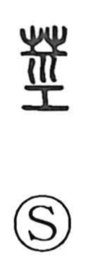

茎

Uncategorized
Kun: kuki | On: kei
stem ・ stalk
Explanation
A phonosemantic compound. The original form is 莖, with 巠 as the phonetic. 巠 depicts the warp on a loom—threads drawn straight and taut, with a horizontal bar at the lower edge—so it carries the sense of something linear and firmly stretched. When the grass radical is added, the graph names the upright part of a plant, the stem. The same phonetic idea of linearity extends to related characters such as 頸 (neck) and 脛 (shin), and to 勁 (strong), where the straight, taut quality suggests strength.